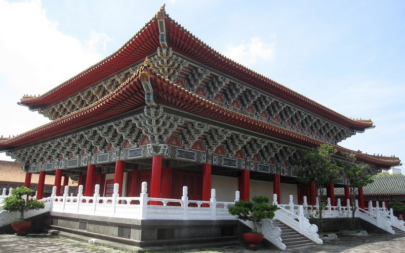

Lotus Pond
Kaohsiung City
Spring and Autumn Pavilions & Dragon and Tiger Pagodas
Lotus Pond is a artificial lake and popular tourist destination on the east side of Zuoying District in Kaohsiung City.
It is famous for the lotus plants on the lake and the numerous temples around the lake. Spring and Autumn Pavilions,
Dragon and Tiger Pagodas are the feature of the Lotus Pond. The history of the Confucius Temple can be traced back to
the Qing Dynasty in 17th century. Although the architecture being presented today is the one rebuilt in 1977, it remains
the pattern of Confucian temple in ancient China and it is the largest measure in Taiwan.
- Best seasons: all year around
- Transportation: Public bus service to the area is available from #301, R35, R51A, R51B, R51C metro shuttle bus.